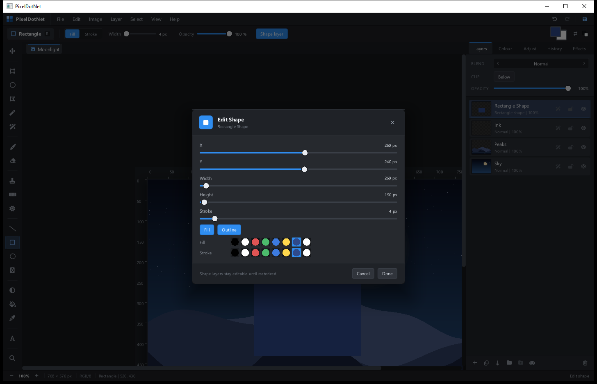
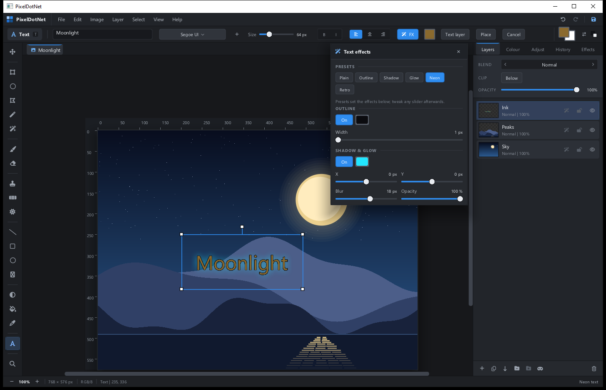

Painting and drawing
Pick a tool, choose a colour, and use the canvas. This chapter explains what each tool is for, how to use it, and the small habits that make the results look better.
Pick a tool and a colour
Every tool lives in the rail on the left. Hover an icon to see its name, click it once, then look at the options bar across the top. The options change to match the tool, and they stay where you left them while the app is open.
- Single-letter shortcuts switch tools without touching the rail. B is the brush, E the eraser, M the rectangular selection, and so on.
- The foreground colour is what the brush, bucket, shapes, and text use. Click the colour swatches at the top right or open the Colour tab to choose one precisely.
- X swaps the foreground and background colours. D resets them to black and white.

Paint with the brush
Use it when: you want to paint colour, shade, sketch, or add a soft glow. Shortcut: B.
- Make a new layer with Ctrl+Shift+N, so the artwork underneath stays safe.
- Pick a colour in the Colour tab, or click the foreground swatch at the top right.
- Choose a size. Drag the Size slider, press [ and ], or hold Alt and scroll over the canvas.
- Drag on the canvas. The ring under the pointer shows the brush size before you start.
- Soften or strengthen. Lower Hardness for a soft airbrush edge. Lower Opacity to build colour gradually instead of covering it in one pass.
Good for soft shading
A large soft brush at 20–40% opacity. Pass over the same area two or three times to build depth slowly.
Good for clean edges
A small hard brush at 100% opacity. Ideal for line art, pixel art, and crisp highlights.
Erase without losing the original
Use it when: you need to remove paint from a layer. Shortcut: E.
On a normal layer the eraser creates transparency. On the bottom background layer it paints white, because that layer is always opaque. Size, hardness, and opacity work exactly like the brush.
Draw lines, rectangles, and ellipses
Use it when: you need a clean edge, a frame, a circle, or a simple diagram rather than a painted stroke.
Line (L)
Drag from the start point to the end point. Weight sets the thickness and Opacity sets the strength. Turn on Shape layer if you want to adjust the line later from Layer → Edit Shape….
Rectangle (R) and Ellipse (O)
- Choose Fill or Stroke in the options bar. Fill paints a solid shape; Stroke draws only the outline.
- Set the width when using Stroke. This is the outline thickness.
- Drag on the canvas. Hold Shift while dragging for a perfect square or circle.
- Keep it editable. Turn on Shape layer before drawing. You can then change its size, fill, outline, and colours with Layer → Edit Shape….

Fill an area with colour
Paint Bucket (K)
Click a connected area to flood it with the foreground colour. Tolerance decides how different a neighbouring pixel can be and still be filled. Use a low tolerance for flat colours and line art; raise it for soft gradients and scans.
Good habit: put the colour on its own layer below the line art. The lines stay clean, and the colour can be changed without repainting the whole picture.
Gradient (G)
Drag from the start point to the end point to make a smooth fade between the foreground and background colours. The direction and length of the drag set the ramp.
- A short drag makes tight bands; a long drag makes a gentle fade.
- Press X to swap the colours and reverse the gradient.
- Lower Opacity to tint an existing picture instead of replacing it.
Pick a colour from the picture
Use it when: you want to match an existing colour exactly. Shortcut: I.
Click any visible pixel to make it the foreground colour. The eyedropper samples the final visible result, so it sees the combined layers rather than one layer on its own. The status bar shows the picked hex value.
Retouch a photo
Use it when: something small needs to disappear without leaving a patch. These three tools are the everyday retouching kit.
Clone Stamp (C)
- Hold Ctrl and click a clean area to set the source.
- Paint where the copy should appear. The offset from the first stroke point is preserved as you paint.
- Set a new source whenever the texture starts repeating.
Healing Brush (H)
The Healing Brush copies texture but shifts the colour to match the destination. It is the better choice for skin, clouds, and smooth surfaces because the repair blends into the surrounding tone. Use the same Ctrl-click method to set a source.
Dodge / Burn (J)
Dodge lightens and Burn darkens. Choose the mode in the options bar and paint. Strength controls how quickly the tone changes. These tools do not change hue, so they are a safe way to add local contrast.
Draw a path
Use it when: you need a clean curved outline, a logo shape, or a path for text to follow. Shortcut: P.
- Choose Fill or Stroke, and set the width for a stroke.
- Click to place a corner point.
- Drag while placing a point to pull out curve handles. The two handles stay symmetrical.
- Close the path by clicking the first point again, pressing Enter, or pressing Finish.
- Press Esc to cancel a path in progress.
The finished path becomes an editable path layer. Use Edit Nodes in the Pen options, or Layer → Edit Path Nodes, to drag anchors and handles. Click a segment to insert a node, and use Add Node or Delete Node for precision. Hold Alt while dragging a handle to move it independently.

Paths can be filled, outlined, and used as a text baseline. See Text on a path for the fun part.
Add text
Use it when: you need a title, caption, label, or sign. Shortcut: T.
- Choose the Text tool and click on the canvas where the text baseline should start.
- Type in the field at the top of the options bar.
- Style it. Pick a font and size, use B and I, and choose left, centre, or right alignment.
- Add effects. Click FX for outlines, shadows, glows, and presets.
- Keep it editable. Turn on Text layer before placing. You can reopen it later with Layer → Edit Text….
- Press Place to commit the text, or Cancel to discard it.
The + button next to the font picker downloads a font from cdnfonts. Paste a font URL or family name and press Add. The family appears in the picker for the rest of the session. This is the only optional online action in PixelDotNet.

For curved text, see text on a curve or Text on a path.
Zoom and pan
Use it when: you need to inspect a detail or see the whole composition. Shortcut: Z.
- Click with the Zoom tool to zoom in; right-click to zoom out.
- Ctrl+scroll zooms around the pointer.
- Ctrl++ and Ctrl+- step through the zoom levels.
- Ctrl+0 returns to 100%, where one picture pixel equals one screen pixel.
- Hold the space bar or middle mouse button and drag to pan while zoomed in.
Zooming changes only the view, never the picture. It is safe to zoom in and out as often as you like.
Every tool at a glance
| Tool | Key | What it is for |
|---|---|---|
| Move | V | Move selected pixels or the active layer; resize a selection. |
| Marquee | M | Select a rectangle. |
| Elliptical Select | Q | Select an ellipse or circle. |
| Lasso | F | Draw a freehand selection around a subject. |
| Magic Wand | W | Select similar colours with one click. |
| Quick Selection | A | Paint over a subject to grow a selection. |
| Brush | B | Paint with the foreground colour. |
| Eraser | E | Remove paint from the active layer. |
| Clone Stamp | C | Copy pixels from one place to another. |
| Healing Brush | H | Repair a blemish and blend it into the surrounding tone. |
| Dodge / Burn | J | Lighten or darken with brush strokes. |
| Line | L | Draw a straight line. |
| Rectangle | R | Draw a filled or outlined rectangle. |
| Ellipse | O | Draw a filled or outlined ellipse. |
| Pen | P | Draw an editable path with curves. |
| Gradient | G | Drag a fade between two colours. |
| Paint Bucket | K | Flood-fill a connected area. |
| Eyedropper | I | Pick a colour from the picture. |
| Text | T | Place live text with effects. |
| Zoom | Z | Zoom the view in or out. |